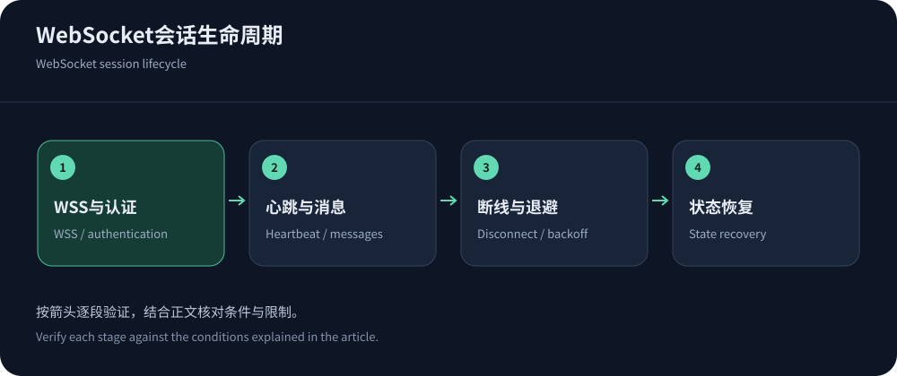
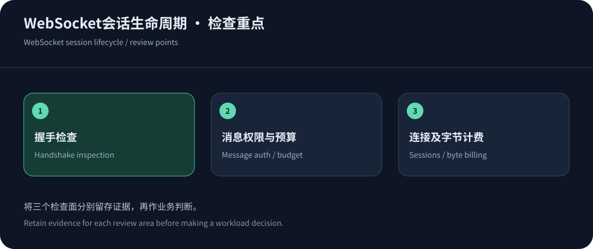

Evaluate a complete session, not only the upgrade
WebSocket support does not imply immortal sessions, durable messages or every real-time protocol. Inventory clients, authentication, duration, bidirectional volume, idle behavior and loss consequences before choosing a proxy or stateful platform.
RFC 6455 defines handshake/frame semantics, not CDN service guarantees or durable delivery. Sources were checked on 14 October 2026.
Validate WSS and origin TLS separately
A proxy can terminate client WSS and establish a separate origin connection. Validate both TLS legs, ports and hostnames. Ordinary HTTP health checks do not prove upgrade or message exchange.


Authentication and ongoing authorization differ
Authenticate at establishment and define expiry/revocation during long sessions. Browser and SDK capabilities differ; avoid long-lived secrets in logged URLs. Origin checks are not standalone identity proof.
Does the WAF inspect every message?
Cloudflare documentation states that the initial upgrade is subject to WAF controls, while established messages are not subsequently inspected by WAF. Applications still validate message size, rate, schema, authorization and cost.
The same documentation notes network deployments can terminate sessions and recommends heartbeat/timeout handling. Verify each vendor’s actual lifecycle rather than generalizing one implementation.
A session lifecycle acceptance table
Use authorized normal clients and observe both ends throughout the session, recording close reasons, retries and message state.
| Stage | Verify | Application responsibility |
|---|---|---|
| Upgrade/authentication | TLS, upgrade response, token, permissions and errors. | Reject unauthorized sessions and protect credentials. |
| Idle/heartbeat | Timeouts across layers and heartbeat behavior. | Compatible heartbeat without excessive traffic. |
| Disconnect/reconnect | Closure/recovery after deployments and network/origin failures. | Backoff/jitter and refreshed authorization. |
| Message recovery | Detect loss, duplicates, ordering and state changes. | Implement sequence, acknowledgements, idempotency, replay or snapshots. |
Heartbeats need a deliberate budget
Set heartbeat behavior against all relevant idle limits with margin. Browser APIs and native clients differ in Ping/Pong control; application heartbeats are distinct from protocol control frames. Excessively frequent heartbeats add work, bytes and device cost.
Session state and load balancing
Reconnects can reach another origin without local session state. Affinity may help but does not replace recovery when the original node fails. Design shared state, replay or snapshots and never infer exactly-once delivery from a proxy.
Verify session and byte billing, not just request counts
CDN5 lists WebSocket on paid Standard/Business but not Free; JQCDN lists it on Standard but not Startup. Verify concurrency, idle limits, ports, regions, bytes and mitigation behavior rather than inferring unlimited service.
Cloudflare documents one HTTP request for initial upgrade and its delivery-byte metering, with aggregated records after closure. Other providers can meter differently; ask about bidirectional bytes, duration, concurrency, logs and security.
Protect both establishment and message work
Handshake bursts consume TLS/authentication, while established sessions can trigger expensive work. Separate establishment controls from identity-aware message budgets. Rate rules can govern upgrade requests, not replace message authorization.
WebSocket proxying is not universal UDP protection; see game architecture. Test only authorized workloads with business and resource outcomes.
Monitor session quality after launch
Track establishment, abnormal closure, lifetime, message latency, reconnects and recovery by audience/client version. Correlate connection drops with releases and resource/state metrics.


Demonstrate recovery before acceptance
Exercise network loss, token expiry, origin restart and deployment, verifying message and UI recovery. Preserve limits, log fields, costs and support contacts.
Use enterprise architecture for operations. Reliable WebSocket systems handle interruptions with bounded impact and recoverable state; WSS support is only the beginning.